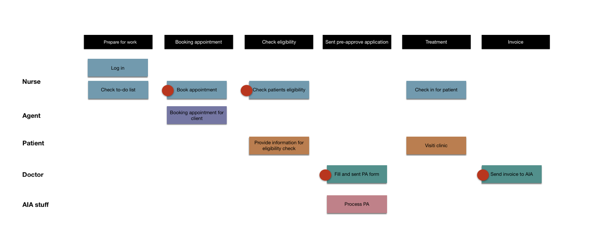
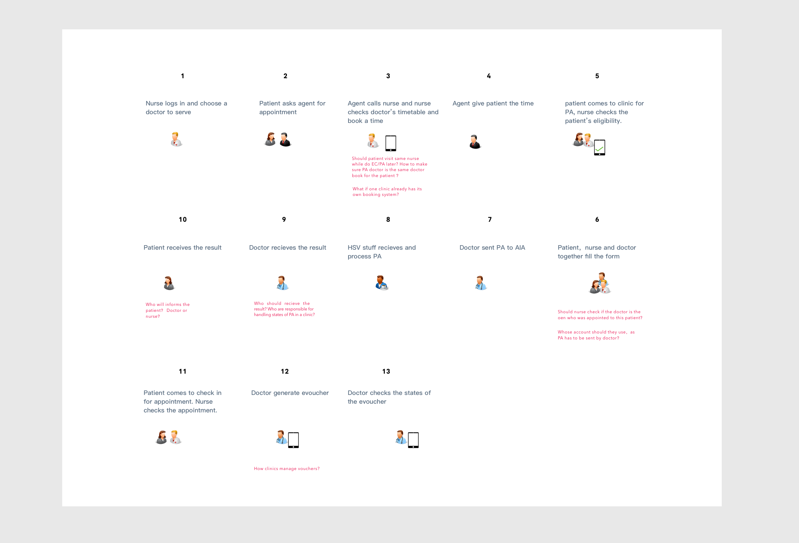
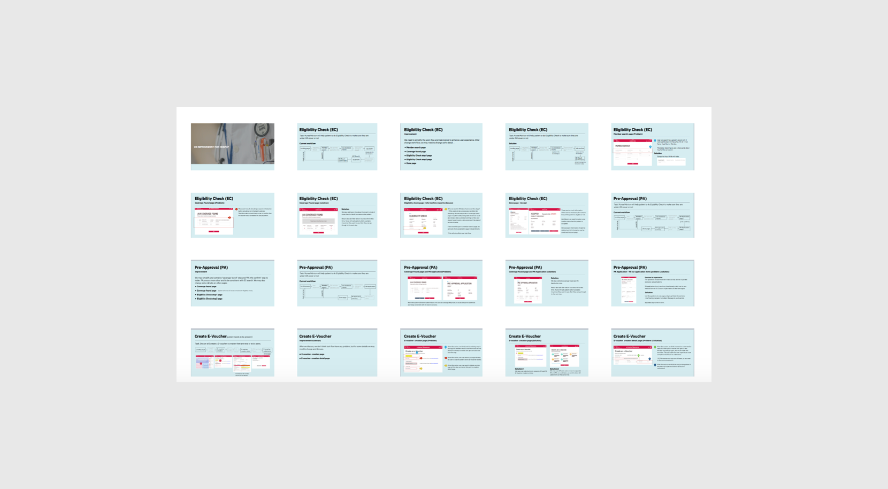
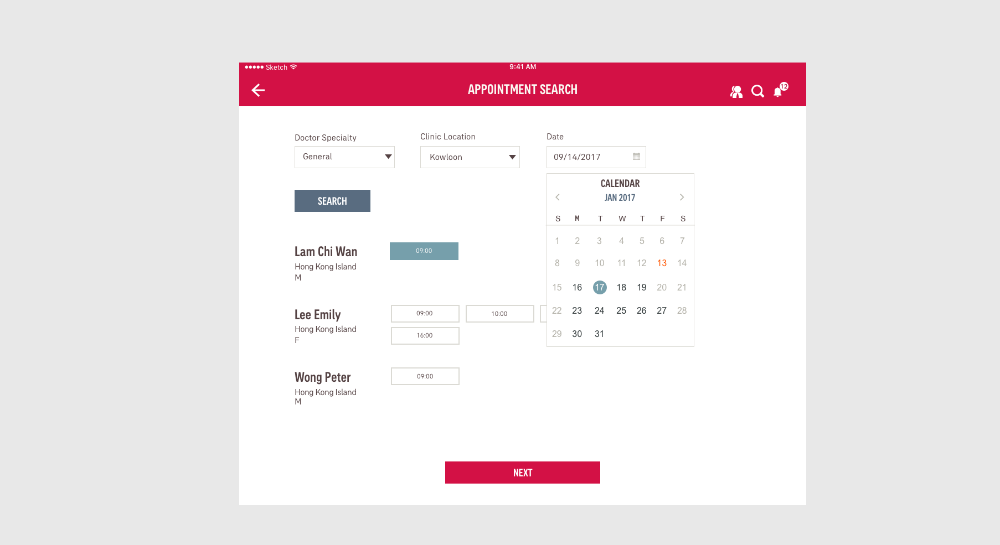
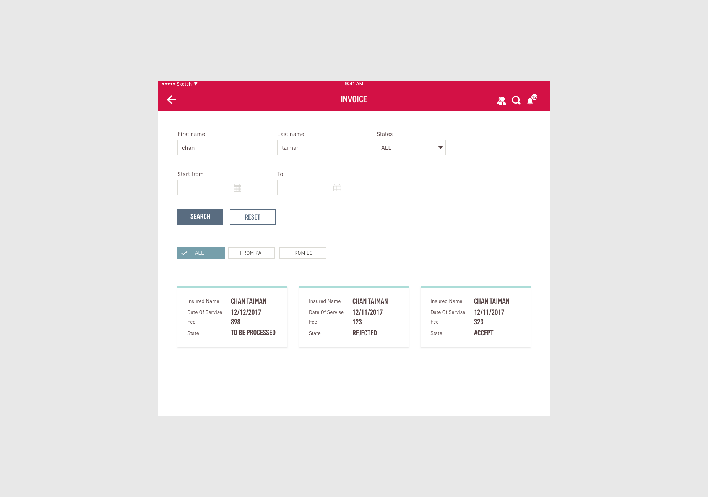

We collaborated with business analysts from AIA HongKong office to design a system for process medical insurance with clinics.
Project time：2017.11-2017.12
AIA HongKong intented to build a system for local clinics to manage the appointment booking and money transaction for AIA customer.
As members of AIA design center, we needed to deliver a conceptual solution for AIA HongKong.
In this project，we designed for business process related to appointment booking，eligibility checking，pre-approve form and invoice management.
We conducted user interviews in order to
We mapped the user scenario with our findings and identified features/service the system should offer or issues to be discussed.
We delivered a deck of solution including interface design and process flow diagrams.
we tried to make booking process efficient by displaying everything on one page.
User can browser and filter invoices from different status and sources.
In this project, I participated in following activities: